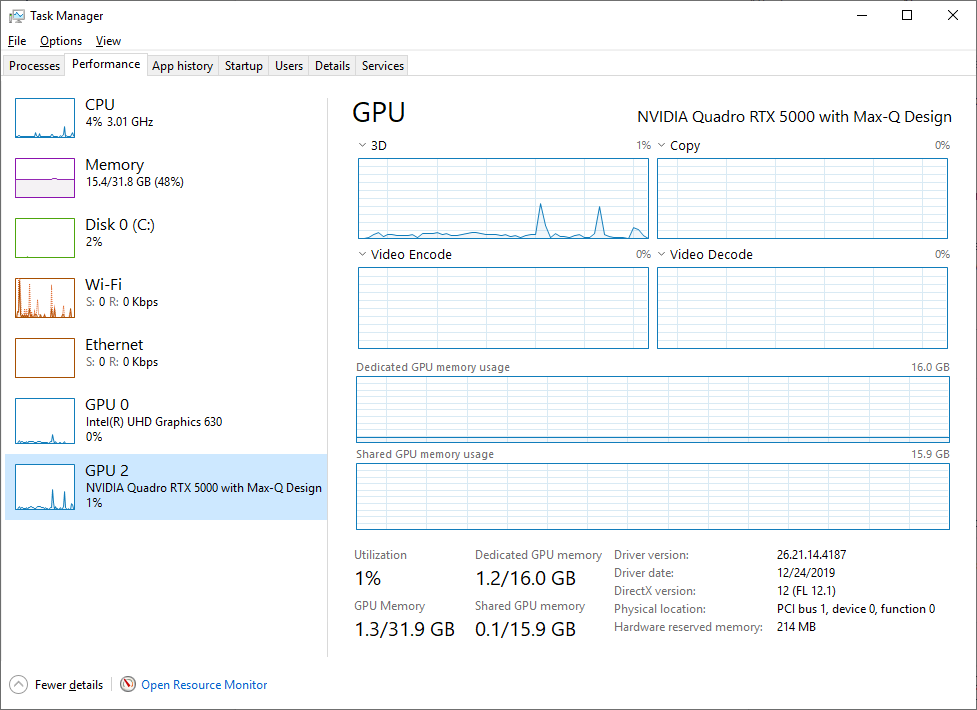

Isaac Sim Performance Optimization Handbook#
Understanding Isaac Sim Performance#
The speed of the simulation can be influenced by a variety of factors. The physics step size, complexity of the scene, number of physics objects, and quantity/resolution of cameras and sensors all play a role in simulation performance. The below tips address common performance optimizations for each of these factors.
Note
The Isaac Sim Benchmarks page contains common workflows to evaluate performance as well as specific optimization recommendations based on the workflow.
Note
To identify performance bottlenecks, profiling the simulation can be helpful. See Profiling Performance Using Tracy for details on using the Tracy profiler to profile the simulation.
Physics Simulation Optimizations#
Physics Step Size: The physics step size determines the time interval for each physics simulation step.
A smaller step size will result in a more accurate simulation but will also require more computational resources and thus slow down the simulation.
A larger step size will speed up the simulation but may result in less accurate physics.
Note
Adjust the physics step size in your script using the SimulationManager.set_physics_dt(dt) function, where dt is the desired step size in seconds.
PhysX Minimum Frame Rate Clamp (
--/persistent/simulation/minFrameRate): caps how manyphysics_dtsubsteps PhysX will run per app update to catch up after a slow frame. The value represents the target minimum app frame rate; PhysX will not run so many catch-up substeps in one update that the effective frame rate would drop below it. This is a direct performance-vs-accuracy knob:
Raising the clamp (for example to
60) keeps the app frame rate up under load at the cost of physics-time accuracy: when an app update is slow, PhysX truncates the substep budget, so simulated time falls behind wall-clock and the simulation appears to run in slow motion (or, equivalently, some physics work is effectively dropped). Use this when responsiveness / rendering throughput matters more than 1:1 sim-time-to-wall-time playback.Lowering the clamp (for example to
15) lets PhysX run more catch-up substeps after a slow frame, keeping simulated time closer to wall-clock at the cost of further reducing the visible frame rate. Use this when sim-time accuracy or determinism matters more than smoothness.
This setting is not the same as the timeline’s targetFrameRate (set via isaacsim.core.rendering_manager.RenderingManager.set_dt()) or the loop runner’s /app/runLoops/main/rateLimitFrequency. See Architecture: Timeline, Physics, and the Renderer for the three-clock architecture.
Note
Adjust the PhysX minimum frame rate clamp by modifying the --/persistent/simulation/minFrameRate=<value> setting, where <value> is the target minimum app frame rate in FPS.
GPU Dynamics: Enabling GPU dynamics can potentially speed up the simulation by offloading the physics calculations to the GPU.
Note
This will only be beneficial if your GPU is powerful enough and not already fully utilized by other tasks.
Enable or disable GPU dynamics in your script using the SimulationManager.set_physics_sim_device(device) function, where device is a string value of either cuda or cpu. In multi-GPU setups, a specific device can be specified by passing the device index as part of the string such as cuda:0.
Physics Scene Complexity: The complexity of the physics objects in the scene will heavily impact the performance of the simulation.
Simple colliders are typically the most performant. The performance scaling is as follows:
Primitive colliders (box, sphere, capsule, plane) are most performant.
Convex meshes are the next most performant (Convex Hull or Convex Decomposition approximation)
Cylinders are a good choice for smooth, precise rolling behavior but are more expensive than a low-vertex convex mesh approximation.
Disable or simplify colliders that are not essential for the workflow being simulated. For example, if a robot is not expected to interact with the walls of a room, the wall colliders could be disabled while keeping the floor collider enabled.
Similarly, avoid unnecessary collisions. Where possible, reduce the number of object overlaps to reduce the overhead in the collision phase of the simulation.
Note
This applies to both the scene as a whole and individual physics objects. Complex colliders on highly-articulated robots as well as many complex collision meshes on walls, tables, etc. all add to the computational cost.
Adjusting PhysX Thread Count: The number of threads used by PhysX can be adjusted to improve performance depending on the workload.
Note
This is specifically applicable for CPU-based physics simulation. Dropping thread count to 0 will run synchronously on the main thread which in some simple scenes can enable speedups. The default thread count is 8. Set the thread count using --/persistent/physics/numThreads=<value>.
Checkout the Physics Simulation Performance guide for more optimization tricks!
Robot Asset Optimizations#
A step-by-step tutorial to optimize a sample asset is provided in Tutorial 12: Asset Optimization.
Merge Mesh Tool: Using the Merge Mesh tool at Tools > Robotics > Asset Editors > Mesh Merge Tool can allow for a more streamlined asset structure and reduction in total mesh count.
Scenegraph Instancing: Instancing enables shareable, referenceable prim subgraphs. Using pointers to shared reference assets can reduce total memory usage for assets with repeated, identical meshes (e.g. wheels).
An example of instancing is described in Tutorial 12: Asset Optimization. A general guide to instanceable assets can be found at Instanceable Assets.
Note
Instancing inherently carries some limitations related to attributes as children cannot have modified attributes from the parent reference object.
Simplify Colliders: Colliders have high computational costs. The simpler, the collision shape, the more performant the simulation behaves.
A reduction in contact points brings substantial performance improvements. For wheel colliders, it’s recommended to use a simple cylinder or sphere collider instead of a mesh collider. This greatly simplifies contact with the ground plane, increasing performance and allows the robot to drive smoothly over terrain.
For a robot, use the simplest approximations possible that provide the needed level of precision. For example, for a mobile robot, a cube approximation is often sufficient for the body.
Reducing the total number of colliders is also beneficial. Consider whether every collider added to the asset needs to be enabled. Selectively disabling/enabling colliders can greatly reduce computational cost.
Note
Higher precision applications require using mesh colliders rather than simplified shapes. There are different approximations available and the choice of each one is a tradeoff between performance and precision.
Disable Self Collisions: Disabling self collisions from an Articulation Root could reduce computational load and create substantial speedups at runtime if not needed.
Note
This is highly usecase-dependent. With a complex articulated hand, self collisions are necessary to avoid interpenetrations and provide realistic collisions. For a wheeled mobile robot with some internal geometries, it is likely an unnecessary load to compute any collisions other than those with the external environment.
Scene and Rendering Optimizations#
For an overview of available renderer modes and when to use each one, see Rendering modes.
Simplify the Scene: Reducing the complexity of the scene, implementing level of detail (LOD), culling invisible objects, and optimizing the physics settings.
Note
Isaac Sim provides several tools for simplifying your scene
Scene Optimizer: kit extension that performs scene optimization on the USD level
Mesh Merge Tool: Isaac Sim utility to merge multiple meshes to a single mesh
Note
During realtime simulation, the gizmos (including floor grids) automatically disappear to optimize performance. They reappear when the simulation is paused or stopped.
Using RTX Real-Time 2.0: (see RTX - Real-Time 2.0 mode)
RT2 is the new default rendering mode in Isaac Sim. It offers both accuracy and performance improvements over the previous RTX Real-Time mode.
For training-in-the-loop or other workflows that prioritize throughput over full light transport, consider RTX - Minimal for faster performance. In standalone Python, set
renderertoMinimalRenderingin theSimulationApplaunch configuration and useminimal_shading_modeto choose the simplified shading behavior. See Rendering modes for mode selection guidance.The retrace threshold can be decreased to improve performance at the cost of a slightly more biased result. This will still be comparable in accuracy to the legacy RTX Real-Time mode.
"--/rtx/pathtracing/cached/retrace=0.1"Disabling Fractional Cutout Opacity may also improve performance at the cost of losing accuracy of translucency effects.
"--/rtx/pathtracing/fractionalCutoutOpacity=false"
Note
On some older hardware, specifically in the Ampere generation, performance of RT2 may fall lower than RTX Real-Time mode. Using the Retrace Threshold setting above shoud improve performance of RT2 above that of the legacy mode with comparable accuracy.
Disable Materials and Lights: (see RT2 Mode for specific RT2 and Path Tracing settings)
Loading time can be drastically slowed down by a large quantity of materials in the scene. Loading materials can be disabled by setting:
"--/app/renderer/skipMaterialLoading=true"Disabling lights can simplify the rendering workload and improve performance.
Turn off rendering features in the render settings panel (these will also have equivalent carb settings that can be set in python). There is no non-rtx rendering mode in the Isaac Sim GUI application, but you can disable almost everything (reflections, transparency, etc) to increase execution speed. To disable rendering completely unless explicitly needed by a sensor, you can use the headless application workflow.
Adjust DLSS Performance Mode: DLSS performance mode is toggled by the
--/rtx/post/dlss/execMode=<value>setting. Values are as follows:Performance (
0) - the most performant setting, reducing VRAM consumption and rendering time but decreasing render quality. This is the default value in Isaac Sim.Balanced (
1) - offers both optimized performance and image quality.Quality (
2) - offers higher image quality than balanced mode, at the cost of increased render time and VRAM consumption.Auto (
3) - Selects the best DLSS Mode for the current output resolution. When rendering 720p cameras, Auto mode tends to select Quality, so you may see performance impacts by running in Auto mode while rendering cameras at lower resolution.
Note
The DLSS mode is currently set to Performance by default. Performance mode will yield the best performance, but may result in artifacts such as smearing when rendering cameras at lower resolutions (720p or lower).
Disabling viewport updates in headless mode: Running in headless mode with
./python.shstill renders the default viewport. This adds the overhead of rendering a view that may not be needed.To improve performance, viewport updates can be disabled by setting the
SimulationAppconfiguration parameterdisable_viewport_updates=True.from isaacsim import SimulationApp simulation_app = SimulationApp({"headless": True, "disable_viewport_updates": True})
When not using SimulationApp, users can also disable viewport updates with the following code snippet:
from omni.kit.viewport.utility import get_active_viewport viewport = get_active_viewport() viewport.updates_enabled = False
Note
Setting disable_viewport_updates in SimulationApp is only supported if running in headless mode. For streaming usecases, this option should not be used.
Disabling texture streaming: Texture streaming is a feature that helps minimize GPU memory consumption, particularly in large scenes.
Disabling texture streaming can have positive performance benefits but will result in increased GPU memory consumption. There’s also possible negative UX impacts if memory is running low - leading to crashes or missing some textures.
To disable texture streaming, modify the value of the
/rtx-transient/resourcemanager/texturestreaming/enabledsetting."--/rtx-transient/resourcemanager/texturestreaming/enabled=false"
Note
This is not recommended for all use cases. It should be used on a case-by-case basis and evaluated for each workflow to determine its suitability. This may lead to unintended rendering behavior.
CPU Thread Count Optimizations#
Three settings control the number of CPU threads used by Isaac Sim. When left unset (the default behavior), Isaac Sim will use all available threads on the system. Standalone Python workflows are limited to 32 threads by default and can be modified by changing the limit_cpu_threads argument in the SimulationApp constructor.
--/plugins/carb.tasking.plugin/threadCount: Sets Carbonite’s maximum worker thread count.--/persistent/physics/numThreads: Sets how many Carbonite worker threads to use for physics simulation.--/plugins/omni.tbb.globalcontrol/maxThreadCount: Sets Omniverse TBB scheduler’s maximmum worker thread count.
Spawning too many worker threads may lead to CPU bottlenecking. Consider limiting the number of CPU threads used by Isaac Sim to fewer than the number of virtual cores on the system. Current testing indicates that 32 threads is optimal for most use cases.
For example, on Ubuntu:
./isaac-sim.sh --/plugins/carb.tasking.plugin/threadCount=16 --/plugins/omni.tbb.globalcontrol/maxThreadCount=16
Standalone Python:
from isaacsim import SimulationApp
simulation_app = SimulationApp({"headless": False, "limit_cpu_threads": 16})
CPU Governor Settings on Linux#
CPU governors dictate the operating clock frequency range and scaling of the CPU. This can be a limiting factor for Isaac Sim performance. For maximum performance, the CPU governor should be set to performance. To modify the CPU governor, run the following commands:
sudo apt-get install linux-tools-common
cpupower frequency-info # Check available governors
sudo cpupower frequency-set -g performance # Set governor with root permissions
Note
Not all governors are available on all systems. Governors enabling higher clock speed are typically more performance-centric and can yield substantially better performance for Isaac Sim.
Asynchronous Rendering#
Asynchronous rendering is a feature that allows the rendering to run in a separate thread from the simulation thread. In Isaac Sim, asynchronous rendering is enabled by default whenever Isaac Sim is in a stoppped or paused state. This greatly improves UI responsiveness and viewport FPS, particularly for complex scenes.
Asynchronous Rendering Toggle (Default)#
This is set in the isaacsim.core.throttling extension. To disable this feature in the event of unexpected behavior, set the exts."isaacsim.core.throttling".enable_async setting to false when starting the application.
./isaac-sim.sh --exts."isaacsim.core.throttling".enable_async=false
Note
This setting is only set true when running with isaacsim.exp.full.kit, not when running via a Python-based workflow. It could be enabled manually using the above setting for other workflows if desired.
In certain use cases, particularly with Replicator-based SDG workflows, it may be necessary to disable asynchronous rendering to ensure proper behavior.
Runtime Asynchronous Rendering (Experimental)#
Asynchronous rendering is experimentally supported during runtime. To enable asynchronous rendering for Python-based workflows, add the below arguments to the run command. For full Isaac Sim workflows, additionally disable the toggle in the isaacsim.core.throttling extension so that the application will always run asynchronously.
./isaac-sim.sh --exts."isaacsim.core.throttling".enable_async=false --/app/asyncRendering=true --/app/omni.usd/asyncHandshake=true --/omni/replicator/asyncRendering=true
./python.sh script.py --/app/asyncRendering=true --/app/omni.usd/asyncHandshake=true --/omni/replicator/asyncRendering=true
Note
This feature is experimental and may lead to unexpected behavior. Enabling this feature will not necessarily lead to performance improvements. Possible speedups will heavily vary based on the use case and hardware, but are more likely given heavily CPU-bound workflows.
Multi-GPU Support#
The following rules of thumb may help improve multi-GPU performance, based on our multi-GPU benchmarks.
Note
Exact Isaac Sim performance metrics when using multiple data-center-grade GPUs can be found here.
Add as many GPUs as cameras being rendered - but no more. When rendering 2 720p cameras with 2 GPUs, we saw a speed up of 72% to 89% compared to single GPU performance, but using 4 GPUs yielded only 61 - 81% improvement.
Performance scales better the more cameras you’re rendering. Our 4 camera with 4x GPUs test scaled well with an overall speed up of about 213% - 233%, but our 8 camera with 4 GPUs test scaled even better with an overall speedup of 271% - 281%.
Single high-resolution cameras render faster on multiple GPUs. An exception to our earlier rules - if you are rendering a single high-resolution (4K or higher) camera, multiple GPUs can help accelerate rendering.
Increasing GPU count does not improve scene load time. GPU count does not influence the amount of time it takes to load a USD, or the maximum USD scene size that can be loaded.
GPU Physics simulation only utilizes 1 GPU. Increasing GPU count will not improve GPU physics simulation performance.
Disabling IOMMU On Linux#
Per the CUDA C++ Programming Guide, users on bare-metal Linux should disable the IOMMU to improve multi-GPU performance.
IOMMU may be disabled from system BIOS (exact instructions vary based on motherboard specification), or from the command line via:
sudo bash -c 'echo GRUB_CMDLINE_LINUX="amd_iommu=off" >> /etc/default/grub'
sudo update-grub
sudo reboot
After rebooting, the IOMMU should be disabled.
Note
If IOMMU is enabled, you will receive a warning like IOMMU is enabled. below the nvidia-smi output in the logs when running Isaac Sim.
Reducing GPU Memory Utilization#
These are suggestions to help reduce Isaac Sim GPU memory utilization:
Reduce the Texture Streaming Budget. Select the
Render Settingstab, then select theCommonsettings. UnderDebug>Streaming Settings, reduce"Texture Streaming Budget (% of GPU memory)". By default this value is set to 0.6, 60% of GPU memory capacity. To reduce GPU memory consumption, the number can be reduced further. For standalone Python workflows, you can modify the value of the/rtx-transient/resourcemanager/texturestreaming/memoryBudgetsetting.Reduce total rendered pixel count by turning off unnecessary viewports or reducing rendered camera resolution, if possible.
Experimental: Reducing Potential Memory Leaks#
Experimental suggestion to help reduce Isaac Sim RAM consumption in the event of memory leaks in long-running workflows:
- Adjusting the memory allocator to reduce memory leaks in long running workflows, particularly where stages are loaded and unloaded repeatedly.
To change the allocator configuration, set the following environment variable:
export GLIBC_TUNABLES=glibc.malloc.arena_max=1:glibc.malloc.mmap_max=0:glibc.malloc.mmap_threshold=2147483647
Useful Tools#
Windows#
Task Manager is a great resource for giving nice clean graphs and can show peak usage on a variety of system information regarding performance.

Click on the Start icon
Type “Task Manager”
In Task Manager, Select the “Performance” Tab
On the left side of this pane you will see various graphs like CPU, Memory and GPU. Select any of these to get a more detailed view of the data. Generally speaking if any of these are spiking and peaking out, you should look into its cause and begin to troubleshoot.
Linux#
nvidia-smi is a great resource for giving useful data on Linux.
See these documents for further information: